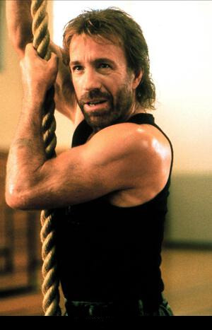
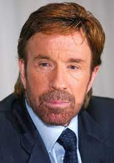
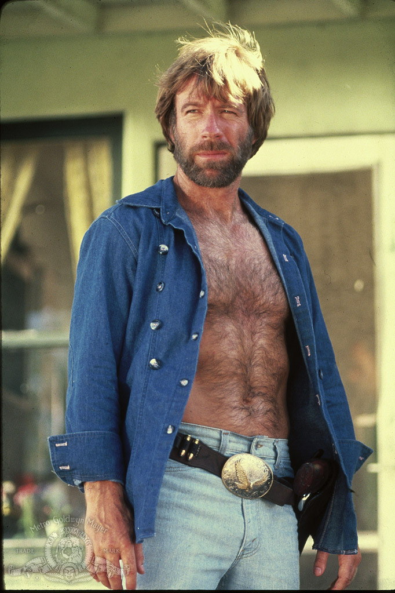

Chuck Norris au cinéma !!!
C'est en 1968 que Chuck Norris débute au cinéma, en tenant un petit rôle dans Matt Helm règle son comte. En 1970, son plus jeune frère Weiland meurt au Viêt Nam : Chuck lui dédiera plus tard son film Portés disparus (1984).En 1972, alors qu'il est toujours champion du monde de karaté en titre, il tient son premier rôle important au cinéma en interprétant, dans La Fureur du dragon, l'artiste martial qu'affronte Bruce Lee lors du combat final ; grâce à cette scène finale dans le Colisée, il se fait connaître du grand public. En 1974, l'acteur Steve McQueen l'encourage à prendre des cours d'art dramatique au MGM Studio sous la férule de Jonathan Harris.

Les engagements de Chuck Norris !!!
En 1990, Norris crée l'association « Kick Drugs Out of America », renommée depuis « Kick Start ». En novembre 2006, il se rend en Irak pour soutenir les troupes américaines.

une peu plus privé !!!
En 1958, Chuck Norris se marie à l'âge de 18 ans avec sa petite amie, Diane Holechek avec laquelle il a deux fils : Mike né en 1962 et Eric né en 1965. Le couple divorce en 1989. D’une liaison extra-conjugale naît en 1963 une fille, Dina DiCioli ; il l'a découvert lorsque Dina, âgée de 26 ans, lui a écrit, affirmant être sa fille biologique. L'acteur se remarie, en 1998, avec l'ancien mannequin Gena O'Kelley de 23 ans sa cadette, ils ont des jumeaux nés en 2001 : Dakota Alan, un garçon, et Danilee Kelly, une fille.

Appartion de Chuck à la télévision !!!
1993 - 2001 : Walker, Texas Ranger (Walker, Texas Ranger), de Christopher Canaan, Leslie Greif et Paul Haggis (série) : Cordell Walker
1993 : Wind in the Wire : lui-même
1998 : La Colère du tueur (Logan's War: Bound by Honor), de Michael Preece : Jake Fallon
1999 : Le Successeur (Sons of Thunder) : Cordell Walker
2000 : L'Homme du président (The President's Man), de Eric Norris et Michael Preece : Joshua McCord
2000 : Le Flic de Shanghaï (Martial Law) : Cordell Walker
2002 : Action Force (The President's Man: A Line in the Sand), de Eric Norris : Joshua McCord
2003 : Oui, chérie ! (série) saison 4, 1 épisode : lui-même
2005 : Walker, Texas Ranger : La Machination (Walker, Texas Ranger: Trial by Fire), de Aaron Norris : Cordell Walker
2015 : Les Goldberg (épisode « Boy Barry ») : lui-même (voix)
2017 : campagne de publicité pour la marque Fiat[19],[20].
2020 : Hawaï 5-0 (saison 10, épisode 21) : le sergent major Lee Phillips
SES MEILLEURES PUNCHLINE !!!